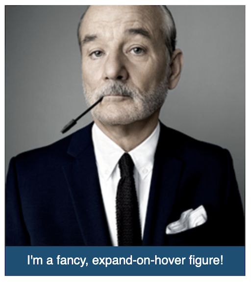
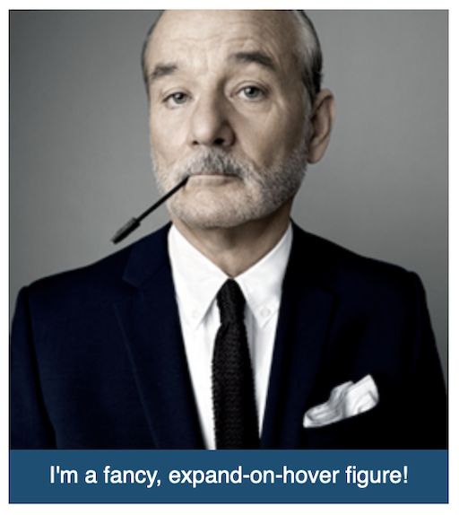

expando-figure
I do some work for the Department of Psychology at the University of Texas.
My interests in mental health and web design intersect on behalf of my friends at the Laboratory for the Study of Anxiety Disorders (LSAD) where they're migrating from WordPress to Grav at the moment even as they work to understand anxiety, its causes and effective treatment.
Parallel to the framework migration, I provide some timely tactical help on the WP side with better responsivity and graphic design for their otherwise text-heavy, list-centric content. Some of this may flow through to the new framework.
While I'm not exclusively a front-end designer, I appreciate and enjoy the unique power of that domain so I'm up for the challenge.
Below is a visual catalog of a few abstracted elements I roll out for the LSAD site.
Click on the images below for a demo.
expando-figure
